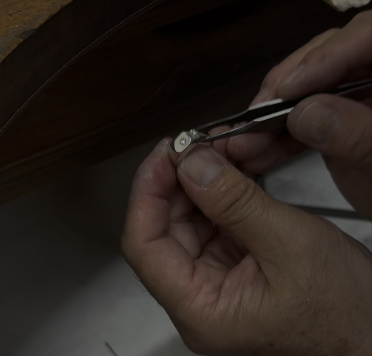

Heritage / 何を見るか
贈った人の想い。経年変化の美しさ。そこに宿る物語。心の豊かさ。

想いを深める場所。
(01) Statement
価値を測る場所ではなく、
想いを深める場所。
「いつか使える日が来たら」と、大切にしまってあるジュエリーはありませんか。
時代が変わり、デザインが古くなったとしても。サイズが合わなくなってしまったとしても。そこに宿る「想い」まで、色褪せることはありません。
BiSPOKEが手がけるブランド「RETOLD TOKYO」は、眠っていたジュエリーに「今のあなた」のための、新しい意味を与える場所です。誰かが大切にしてきたものを、同じように大切にすること。それは、あなた自身を大切にすること、そのものです。
(02) Culture — BiSPOKEで働くということ
品格があり、歴史への敬意を忘れない。けれど心には、パンクスのような自由さと遊び心を宿す。私たちは「伝統を愛するロックな賢者」として、ジュエリーの新しいあり方をつくります。
Heritage / 何を見るか
贈った人の想い。経年変化の美しさ。そこに宿る物語。心の豊かさ。
Rock / 何を見ないか
石のグレードだけの査定。記号消費。煽りや圧。スペック訴求。
満ちてから動く
自己犠牲を美徳にしない。疲れたら休む。満たされた感性が、最高の仕事をつくる。
(03) Careers — 募集職種
想いを聴いてから、手を動かす。査定ではなく対話を、販売ではなく相談を。そんな仕事の姿勢に共感してくれる方を探しています。
(04) Our Brand — RETOLD TOKYO
(05) Company
| 商号 | 株式会社BiSPOKE（ビスポーク） |
|---|---|
| 代表者 | 代表取締役CEO 土屋沙也加 |
| 所在地 | 〒107-0062 東京都港区南青山2丁目5-17 ポーラ青山ビルディング5階 Overlap |
| 事業内容 | ジュエリーリモデル事業（RETOLD TOKYOブランドの企画・運営） |
| ミッション | 三世代先まで語り継がれる感動体験をつくる |
| ブランド | RETOLD TOKYO（リトールド トーキョー） retold.tokyo |
| メール | info@bispoke.co.jp |
| 電話番号 | 03-6820-3026 |
(06) Contact
採用に関するご質問、サービスのご相談、取材のお申し込みなど、どんなことでもお気軽にどうぞ。
Tel. 03-6820-3026（10:00–19:00）